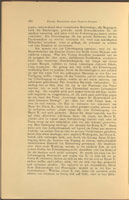
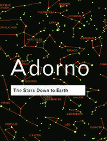
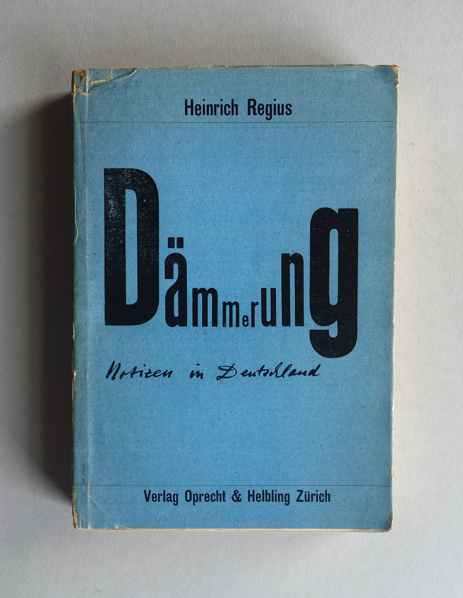

1:22:03 · 16 OPERE
Un accenno alla Dialettica dell'Illuminismo.
Il filo del discorso
Dr Divago introduce Dialettica dell’illuminismo attraverso il problema di una modernità capace di emancipazione ma anche di nuove forme di dominio. Alla lettura della prefazione e dell’incipit affianca Crepuscolo di Horkheimer, consigliato come preparazione e commentato in più passi. La critica della scuola fondata sulla ripetizione, dell’autorità culturale e della disponibilità al conformismo sostiene il suo appello al dialogo e al pensiero autonomo. Adorno sull’astrologia, Fromm sulla libertà, Solženicyn a Harvard e Anders sulla responsabilità ampliano il confronto fra istituzioni e formazione degli individui. La parte conclusiva collega mercificazione del linguaggio, libertà di scelta e creatività come alternativa alla distruttività. La scheda distingue queste interpretazioni dai dati verificabili e corregge le semplificazioni cronologiche, il ruolo di Eatherly, i verdetti di Norimberga e la confusione fra i due eventi del Tonchino. Le accuse di regia oligarchica e i giudizi sugli avversari restano attribuiti al relatore; l’invito alla lettura non viene presentato come una spiegazione esaustiva dei libri.
I libri nel discorso

Dialettica dell’illuminismo
Copertina: Einaudi, Piccola Biblioteca Einaudi, 2010
Edizione illustrativa dell'opera, con traduzione di Renato Solmi e introduzione di Carlo Galli; non identificata nel video.
Titolo, autori, sottotitolo, incipit e prefazione espliciti. Opera centrale; il relatore dichiara una lettura selettiva e non una spiegazione completa.
Passaggio 0:24 ↗ · Fonti e libro ↗
Divina Commedia
Identificazione probabile
Copertina: Giunti Barbera · Passepartout, 2021 · edizione di riferimento
Dante e il sapore di sale del pane altrui rinviano a Paradiso XVII. Non si identifica una specifica edizione.
Passaggio 9:26 ↗ · Fonti e libro ↗
Frammento di un’analisi d’isteria (Caso clinico di Dora) / Bruchstück einer Hysterie-Analyse
Library of Congress · pagina iniziale originale dello scritto, Vienna 1905: Library of Congress · pagina iniziale originale dello scritto, Vienna 1905
Miniatura ufficiale di una pagina originale dello scritto 1905, conservata dalla Rare Book and Special Collections Division. Non è la fotografia della paziente né un frontespizio inventato; non è la diversa pagina due collegata come vc 008265. Immagine nativa 129 ×200, senza ingrandimento; lettura bibliografica e provenienza verificate nella didascalia, non ricavate dalla minuta stampa dell’immagine. L’originale grande vc 008264.jpg ha restituito timeout ed è stato sostituito dalla miniatura ufficiale.
Freud e caso Dora nominati esplicitamente con la frase sulle dita che parlano; richiamo retorico, non esposizione clinica.
Passaggio 11:57 ↗ · Fonti e libro ↗
A World Split Apart (Discorso di Harvard)
Copertina: Harper & Row · edizione bilingue russo e inglese · 1978
Immagine autentica dell’opera, controllata visivamente; l’edizione di riferimento non è attribuita al filmato.
Discorso di Harvard 1978 esplicito. La parafrasi del relatore è distinta dal testo originale e non ne è una citazione letterale.
Passaggio 12:36 ↗ · Fonti e libro ↗
Stelle su misura. L’astrologia nella società contemporanea / The Stars Down to Earth: The Los Angeles Times Astrology Column. A Study in Secondary Superstition
Routledge Classics · The Stars Down to Earth · raccolta ISBN 9780415270991: Routledge Classics · The Stars Down to Earth · raccolta ISBN 9780415270991
Copertina autentica della raccolta inglese che contiene il saggio omonimo insieme ad altri scritti; il contenitore non è una seconda opera nominata. Non copertina della traduzione italiana Einaudi 1985 né edizione identificata nel video.
Autore e titolo italiano espliciti; discute lo studio dell’astrologia, senza leggerlo integralmente.
Passaggio 15:46 ↗ · Fonti e libro ↗
Giulio Cesare
Identificazione probabile
Copertina: Feltrinelli · Universale Economica I Classici · 2013
Copertina autentica dell’edizione di riferimento, non attribuita all’esemplare del video.
Shakespeare nominato con la frase sul destino non nelle stelle ma nelle nostre scelte; probabile riferimento alla battuta di Cassio in Giulio Cesare, atto I, scena 2.
Passaggio 16:33 ↗ · Fonti e libro ↗
Fuga dalla libertà
Copertina: Mondadori, 2022
Fromm, Escape from Freedom e Fuga dalla libertà espliciti; pubblicazione 1941 distinta dallo studio successivo di Adorno.
Passaggio 18:54 ↗ · Fonti e libro ↗
Costituzione degli Stati Uniti d’America
Copertina della raccolta: Testo firmato il17settembre1787. Per l’immagine si usa la raccolta Penguin Classics The Federalist Papers, ISBN9780140444957, che dichiara di includere il testo della Costituzione; non è una fotografia della pergamena originaria.
Copertina autentica di The Federalist Papers: la descrizione editoriale attesta che la raccolta comprende il testo completo della Costituzione. Non è il frontespizio costituzionale del1787 e Hamilton, Madison e Jay non sono presentati come unici autori del documento.
Costituzione statunitense esplicita nell’aneddoto di Gödel; nessuna versione del testo o dimostrazione del presunto difetto viene fornita.
Passaggio 19:53 ↗ · Fonti e libro ↗
Noi figli di Eichmann. Lettera aperta a Klaus Eichmann
Copertina: Giuntina, 1995, traduzione di Antonio G. Saluzzi.
Immagine autentica dell’opera, controllata visivamente; l’edizione di riferimento non è attribuita al filmato.
Titolo italiano e resa tedesca Wir Eichmannsöhne espliciti; non va confuso con il distinto carteggio Eatherly.
Passaggio 22:04 ↗ · Fonti e libro ↗
Il pilota di Hiroshima, ovvero: la coscienza al bando / Burning Conscience
Identificazione probabile
Frontespizio con ritratto, edizione americana1962: Frontespizio con ritratto, non copertina esterna, da Burning Conscience, Monthly Review Press, New York1962, prima edizione americana; originale tedesco Off limits für das Gewissen1961. La seconda pagina della scansione conferma le date. Distinto dal volume italiano Linea d’Ombra1992, traduzione Renato Solmi.
Prima apertura della scansione universitaria, con ritratto a sinistra e frontespizio a destra. Non copertina esterna e non edizione italiana. PDF integrale conservato privatamente.
Anders e le lettere al pilota della missione Hiroshima identificano probabilmente il carteggio con Claude Eatherly. Corretto il ruolo: ricognizione meteorologica, non sgancio della bomba.
Passaggio 22:10 ↗ · Fonti e libro ↗
Crepuscolo
Copertina: Originale tedesco, 1934
Dämmerung, Crepuscolo, autore, annotazioni 1926–1931 e più paragrafi letti. È oggetto centrale di lettura accanto alla Dialettica.
Passaggio 27:14 ↗ · Fonti e libro ↗
1984
Identificazione probabile
Copertina: Newton Compton · edizione illustrativa
I tre grandi blocchi e, a 3747 s, la frase su due più due uguale quattro identificano il romanzo. Titolo non pronunciato in questa fonte, edizione non identificata.
Passaggio 41:08 ↗ · Fonti e libro ↗
I promessi sposi
Identificazione probabile
Copertina: BUR · 1998 · introduzione di Guido Bezzola
Immagine autentica dell’opera, controllata visivamente; l’edizione di riferimento non è attribuita al filmato.
Manzoni e frase sul fare bene anziché stare bene identificano il passo del romanzo. Titolo non pronunciato, identificazione testuale separata.
Passaggio 48:27 ↗ · Fonti e libro ↗
Bibbia
Copertina: San Paolo, 2014 · Nuova Versione dai Testi Antichi · edizione di riferimento
Vangelo sul guadagnare il mondo perdendo l’anima; in seguito Genesi e Qoèlet 1:18 sul sapere e sul dolore. Parti del testo biblico, nessuna edizione autonoma inventata.
Passaggio 55:48 ↗ · Fonti e libro ↗
Minima moralia
Copertina: Einaudi, 2015
Titolo nominato incidentalmente nel ricordo della libreria; nessuna lettura o analisi del volume in questo contributo.
Passaggio 1:08:51 ↗ · Fonti e libro ↗
Anatomia della distruttività umana
Identificazione probabile
Copertina: Mondadori · Oscar saggi · 1992
Copertina autentica dell’edizione di riferimento, controllata visivamente. Non identifica l’esemplare letto o citato nel video.
Autore Fromm e titolo reso come analisi della distruttività umana, insieme al tema creatività/distruttività, rinviano alla voce canonica Anatomia della distruttività umana. Non lettura integrale.
Passaggio 1:20:15 ↗ · Fonti e libro ↗